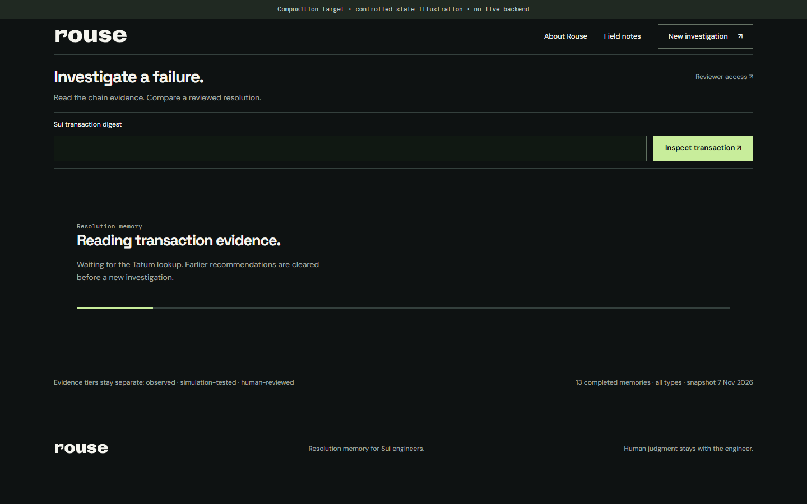
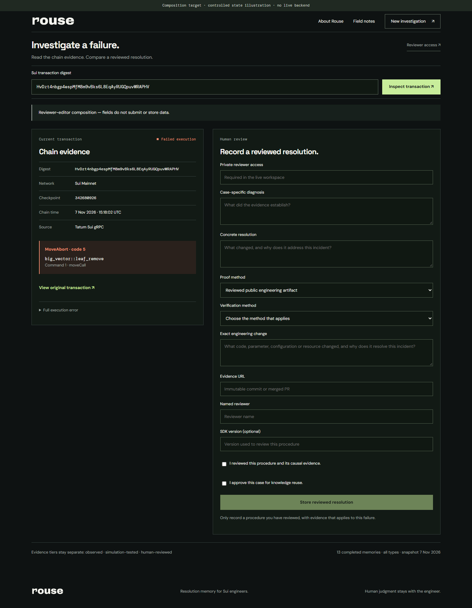
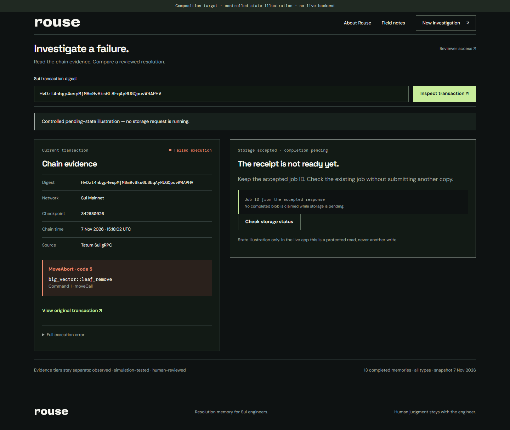
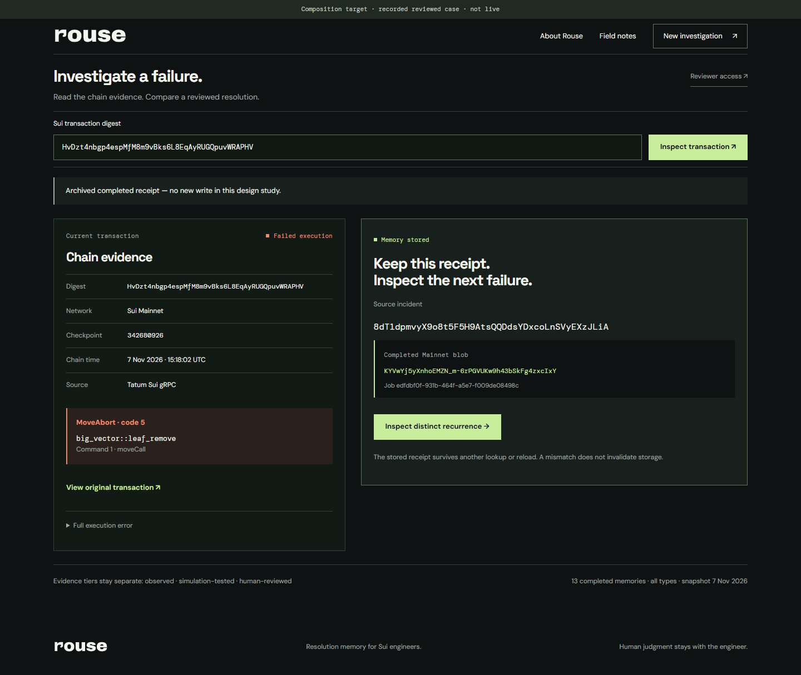
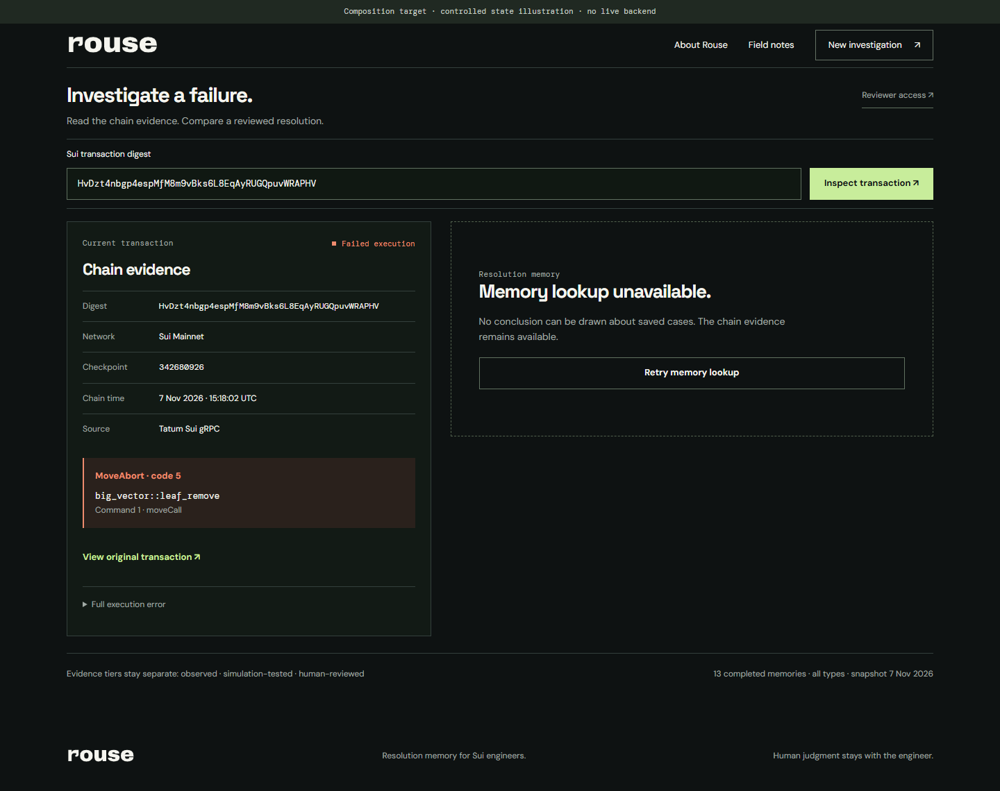
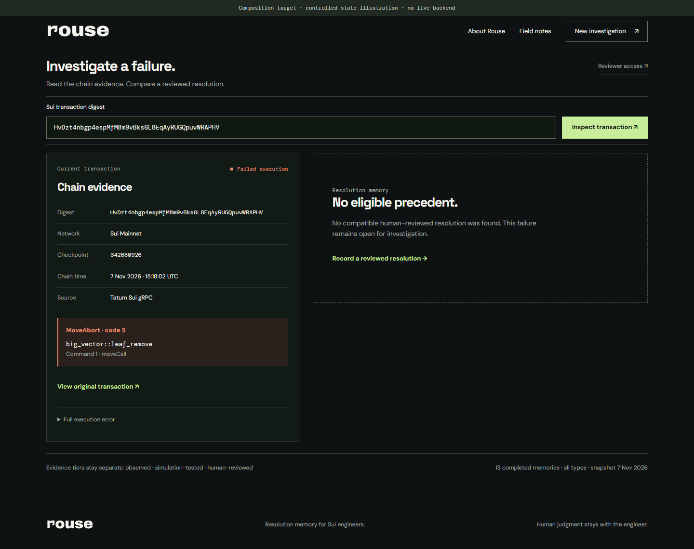

01 / READ, THEN RECALL / M02–M04



A failed chain response first starts recall. Only an accepted recall response reveals the candidate. No timed success.
Motion follows the engineer’s work: inspect, assess, review, retain and reuse. Every change names the real event that allows it.

A failed chain response first starts recall. Only an accepted recall response reveals the candidate. No timed success.


Only a protected valid submission can produce an accepted job. The study submits nothing; pending has no completed blob.

The completed job response, not elapsed time, permits the receipt. Reload recovers it without replaying a write or celebration.
The user selects a new failure. Compatibility and exact-blob equality require real responses; the receipt stays independently valid.

Clear the earlier candidate immediately when a new query begins. An outage is not no-match; no fading stale procedure behind it.

No-match offers investigation and review. It never auto-opens the editor or supplies invented cause/fix text.
Reduced motion substitutes immediate state changes everywhere. No animation callback controls a request or a result.
| Transition | Real trigger | Pacing |
|---|---|---|
| M01 Enter the workspace | User activates the workspace link; destination route renders. | 0ms bespoke transition. Use ordinary navigation; landing content is visible at first paint. |
| M02 Inspect a new digest | Validated nonempty digest starts the transaction request. | Clear prior query result immediately before request. Status appears at once; optional opacity 120ms on status only. No minimum spinner time. |
| M03 Reveal chain evidence | The transaction response establishes failed outcome and memory is configured. | Show chain evidence immediately. Optional status opacity 120ms; no staging of digest or error lines. |
| M04 Reveal the reviewed precedent | Recall response contains a candidate accepted by the existing compatibility checks. | One result-region opacity/translateY(4px→0) reveal, 180ms cubic-bezier(.2,.8,.2,1). No stagger, glow, confetti or numeric counter. Entire text/proof enters together; no delayed blob. |
| M05 Show honest alternatives | Actual outcome, configuration check or request failure selects its own branch. | Status replaces in place at 0ms; optional 120ms opacity for new status text only. No shake or red full-screen flash. |
| M06 Inspect supporting provenance | User toggles native details summary. | Native open/close, 0ms height animation. No animated accordion. |
| M07 Open and correct human review | User opens editor; invalid submit or proof-method change produces applicable form fields. | Editor appears at 0ms, no sliding drawer. Proof-method fields switch instantly. No animation between evidence methods. |
| M08 Submit one reviewed case | Valid protected submit starts exactly one remember attempt. | Show Submitting reviewed resolution immediately. Static wording is sufficient; optional CSS indicator opacity cycle 1000ms, never a progress percentage. |
| M09 Keep the accepted job visible | Remember response returns an accepted pending job ID. | Replace submission status at 0ms. Job ID appears in full with no typewriter effect. Static pending indicator; no ambient pulse. |
| M10 Acknowledge durable completion | Confirmed storage result includes the completed job receipt and Mainnet blob. | Receipt border/status may use one 160ms opacity reveal. Source/job/blob and next action are immediately readable. No pop, burst, bouncing check or count roll-up. |
| M11 Recover without another write | Reload restores accepted job/receipt; explicit status read returns its actual state or fails. | Restored information renders instantly. No replay of completion animation on hydration. Status-read failure leaves the accepted job and any prior receipt visible. |
| M12 Reuse on a distinct failure | User inspects a distinct recurrence, or protected exact-blob verification returns a result. | Use M02–M05. Compare stable full blob text; no flying token, connector draw or automatic switch to a sample digest. |
| M13 Copy provenance | Clipboard promise resolves successfully following a user click. | Text feedback immediately; optional 100ms opacity. May clear feedback after 2 seconds, but must not change evidence or focus. |
| M14 Recover an unconfirmed submission | Transport failure loses the write response, explicit rejection returns, or status read reports terminal failure. | Replace status immediately, 0ms. No countdown, automatic retry, progress bar or optimistic blob. |